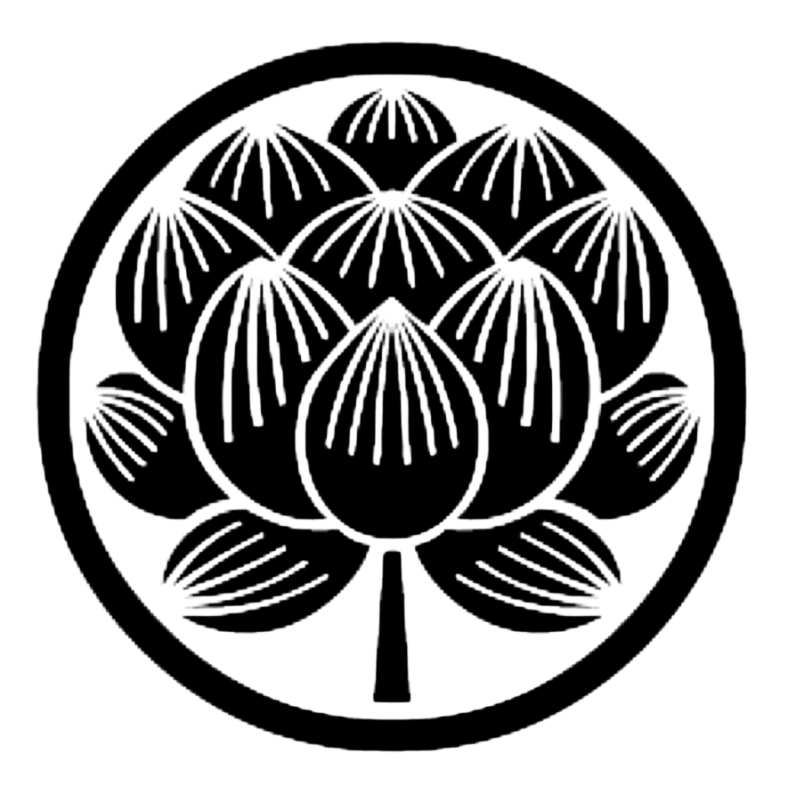

— レシピ＆おいしい食べ方ガイド —
蓮城院の境内で、昔ながらの製法で手作りしたたくあんです。
素朴な味わいをお楽しみいただけましたら幸いです。
このページでは、おいしい食べ方やアレンジレシピをご紹介いたします。
開封後はラップでぴったりと包み、冷蔵庫で保存してください。
空気に触れると風味が落ちやすくなります。
冷蔵保存で約2〜3週間が目安です。お早めにお召し上がりください。
たくあん漬けの名前の由来には諸説ありますが、江戸時代の曹洞宗の高僧・沢庵宗彭（たくあんそうほう）禅師にちなむという説が広く知られています。
沢庵禅師は、質素な食事を大切にする禅の教えの中で、大根の漬物を工夫して作ったと伝えられています。
蓮城院も同じ曹洞宗の寺院です。禅の精神を受け継ぎ、境内で丁寧に手作りしたたくあんを、どうぞ味わっていただけましたら幸いです。
そのまま食べるなら5mm程度の厚さがおすすめ。歯ごたえを楽しめます。
料理に使う場合は、用途に合わせてみじん切り・細切り・輪切りに。
斜めに薄く切ると、断面が大きくなって味がよく馴染みます。